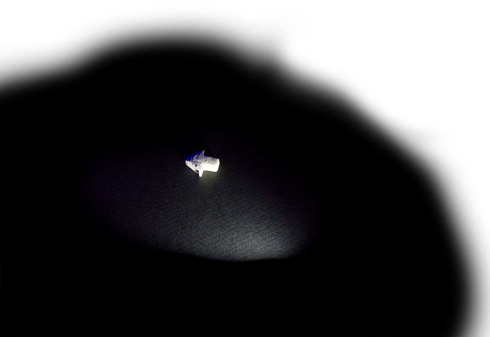
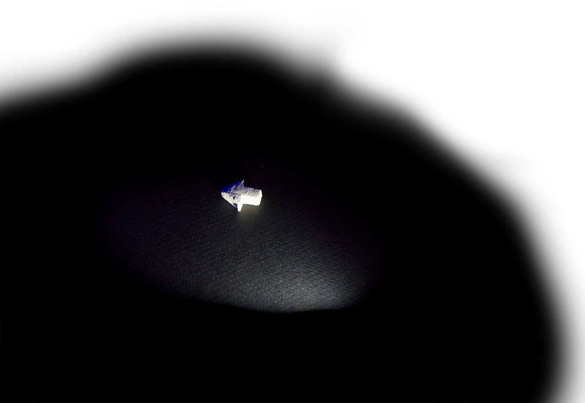

laika
employee
“Laika Application” 2016
I'm a great admirer of Laika and of the work it does, and I want very much to contribute to it. This job may require that I learn a new set of skills very quickly (I hope that I have at least imparted my talent for that), but I have the underlying work ethic and personal experience to be immediately of great value. This position represents a singular opportunity, one I can say, after a good deal of searching, does not exist elsewhere. This step would be my first into the industry which surrounds the craft of making movies, and believe this is the best possible place my foot could land. Laika's body of work and accolades aside, it has a very pure relationship with craft. It is that value which makes this company so special, and the prospect of employment here so tantalizing.
I drove to Portland from Ann Arbor, over the past two weeks. I began work on this portfolio somewhere in Iowa, and I'm finishing it in a charming coffee house in Beaverton. I do apologize if some of this writing is a bit saccharine, but it represents the culmination of a long journey. I did not, for example, have the JavaScript programming abilities to realize the lighting effect on the front page when I imagined it on paper. But, after a good deal of research and experimentation, it looks now exactly as I imagined it. The biggest uncertainty I held was in my ability to get the photos I needed on the road. But, I successfully fasioned the back of my 2000 Ford Expedition into a photo studio. All of this to say: I have a great deal of respect for Laika's standards, and I will go to great lengths to meet them. I suspect, as at Alinea, there is no magic behind what this institution produces. There are only dedicated people working very hard. With the promise to meet any task I'm given with a commensurate attitude, I ask in earnest for the chance to join this team.
A PDF of my resume.